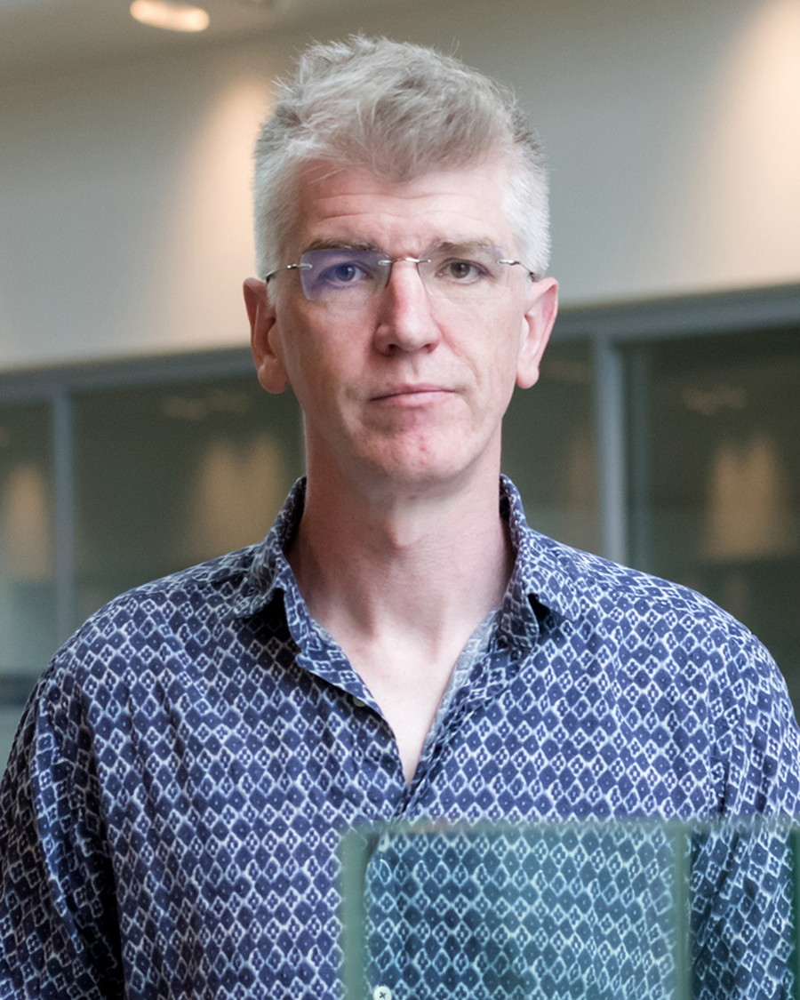
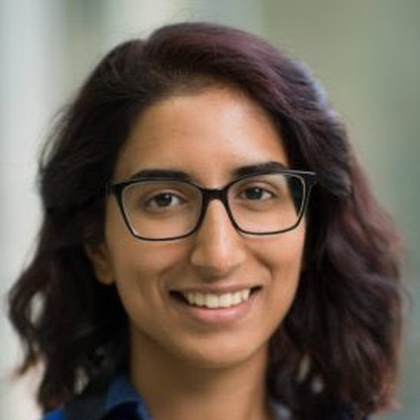
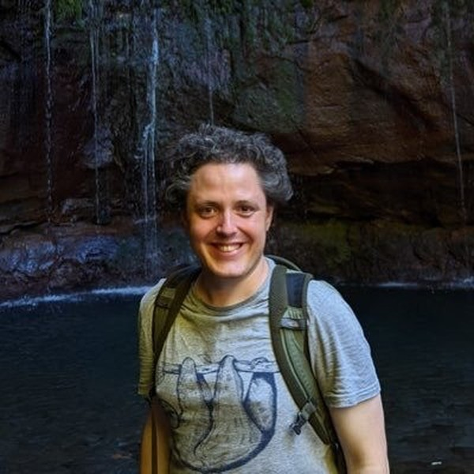
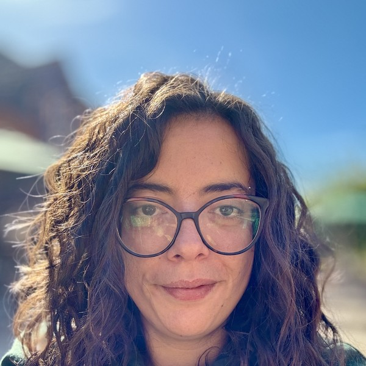
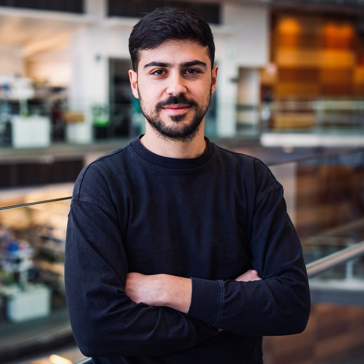

People
The lab brings together developmental biologists, geneticists, physicists, engineers and computational scientists. Everyone is expected to work across those boundaries.

James Briscoe
Principal Group Leader and Deputy Research Director
James Briscoe is a principal group leader and Deputy Research Director at the Francis Crick Institute. Following a PhD with Ian Kerr at the Imperial Cancer Research Fund, he trained with Thomas Jessell at Columbia University, first as a Human Frontiers Science Program Fellow and then as a Howard Hughes Medical Institute Fellow.
He established his group at the MRC National Institute for Medical Research in 2000. He was awarded the EMBO Gold Medal in 2008, became Editor-in-Chief of Development in 2018, and was elected a Fellow of the Academy of Medical Sciences and of the Royal Society in 2019. He was elected an International Honorary Member of the American Academy of Arts and Sciences in 2023. In 2025 he was awarded the Jean Brachet Memorial Lecture by the International Society for Differentiation and in 2026 he was awarded the Waddington Medal by the British Society for Developmental Biology.
Crick profile · Google Scholar · ORCID · Development · james.briscoe@crick.ac.uk



